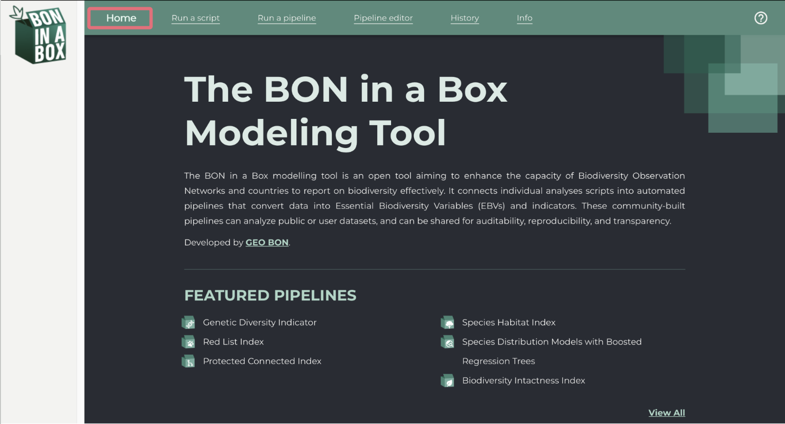
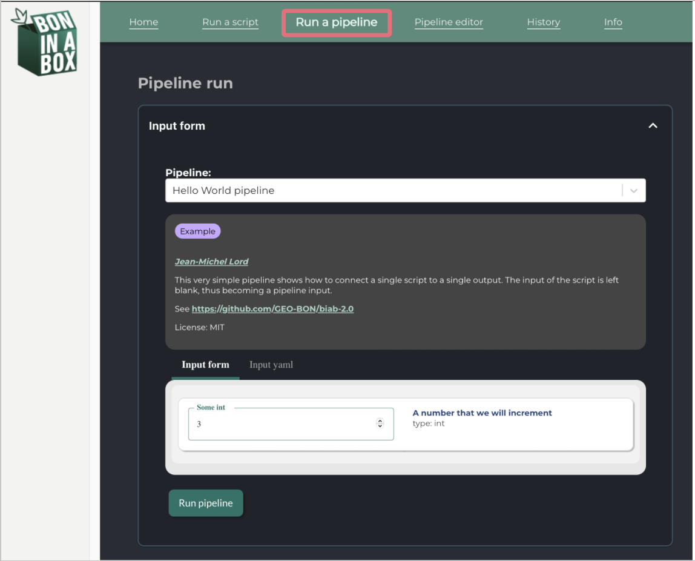
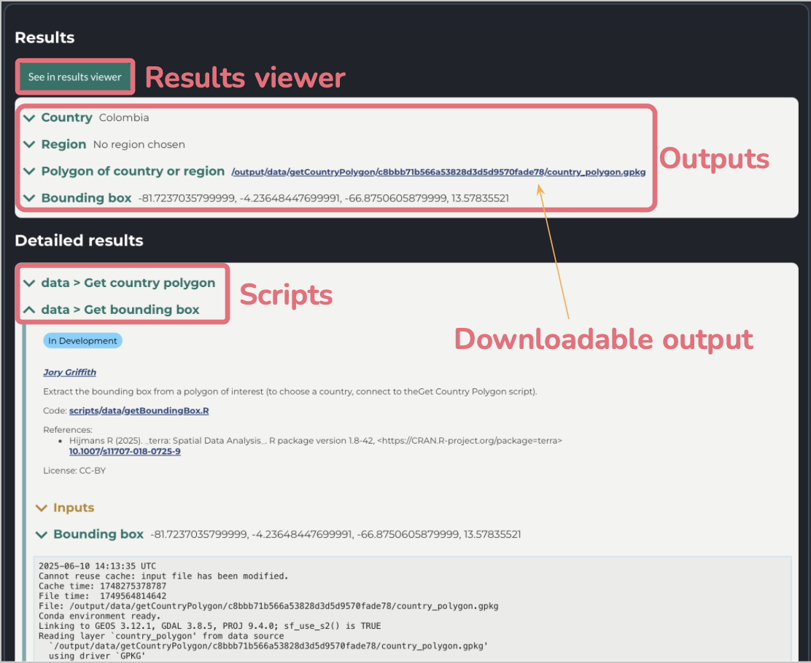
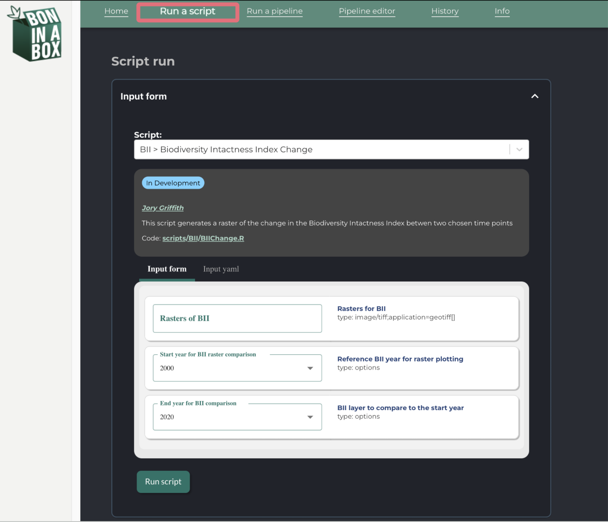
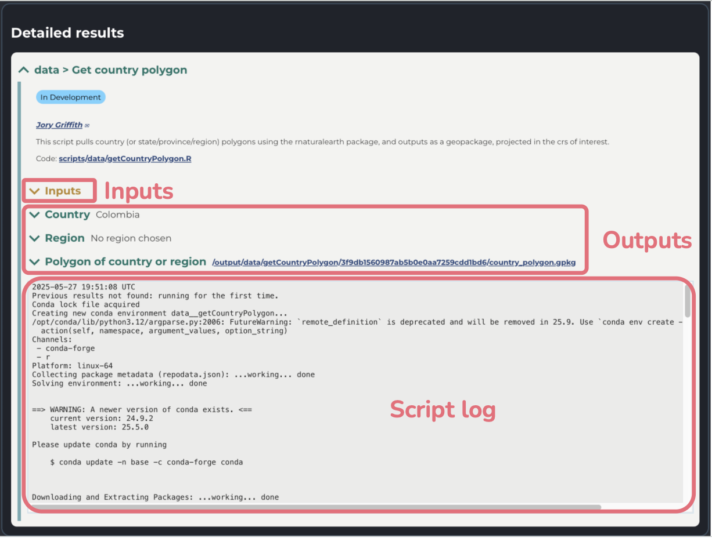
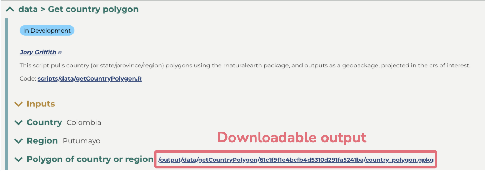
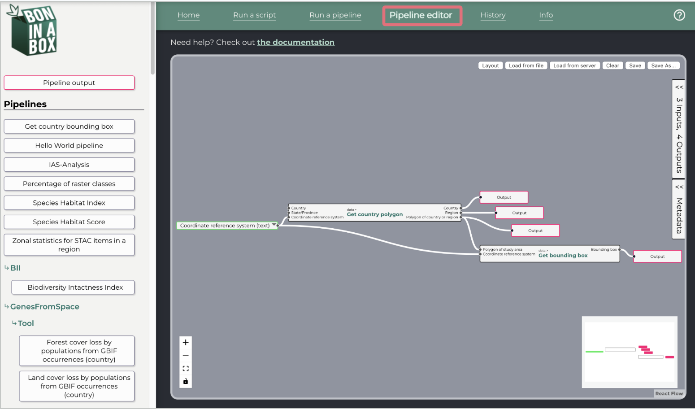
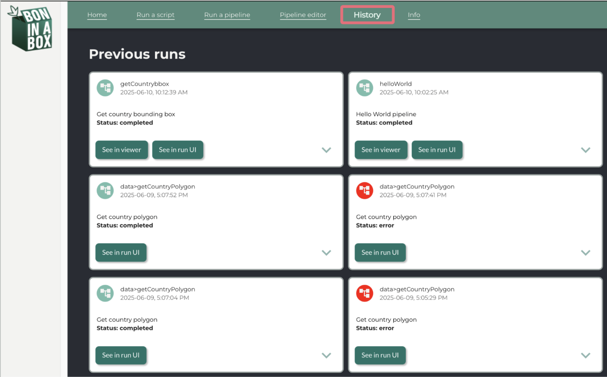
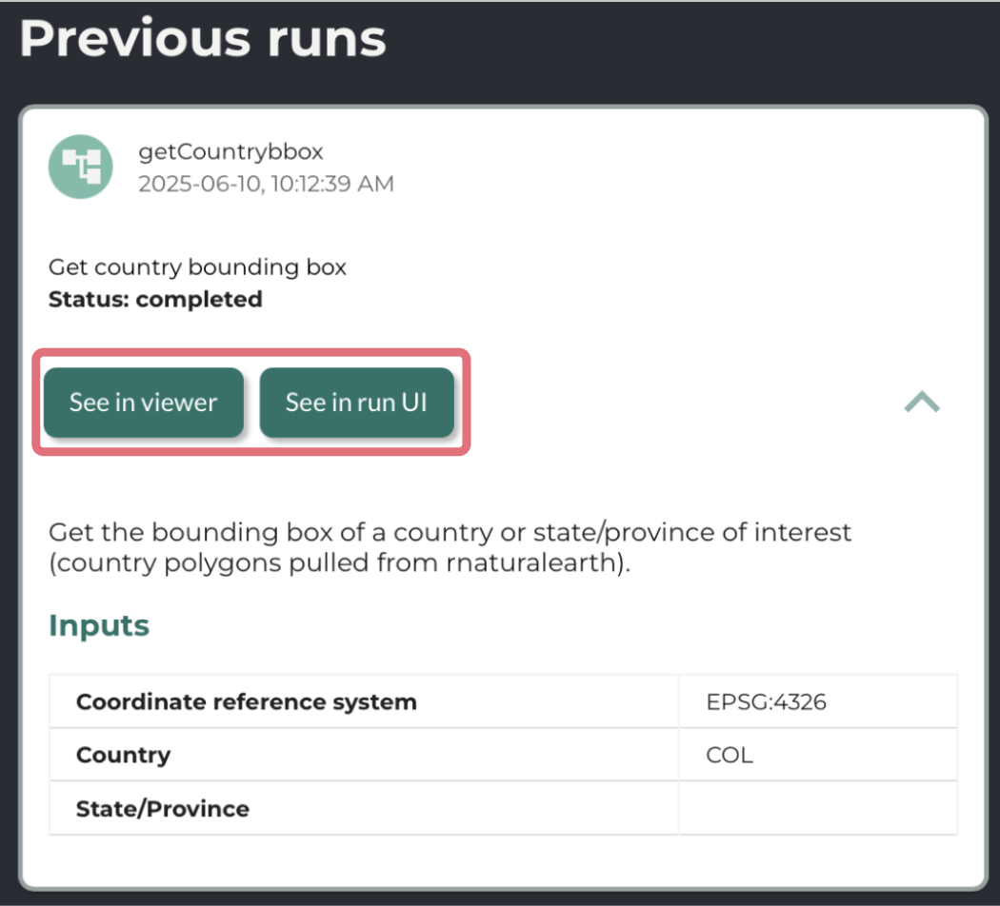

Guide d’utilisation
Le Moteur d’Évaluation de la Biodiversité (BEE) est accessible directement sur notre plateforme en ligne ou peut être installé localement sur votre ordinateur.
Pour la plupart des utilisateurs, nous recommandons la plateforme en ligne, qui permet d’exécuter des pipelines d’analyse de la biodiversité et de calculer des variables essentielles de biodiversité (EBV) et des indicateurs sans installer de logiciel.
Accéder à BEE en ligne (recommandé)
BEE est accessible par une interface Web; aucune expérience en programmation ni installation locale n’est nécessaire pour analyser la biodiversité.
Pour commencer :
Créer un compte GEO BON : Si vous n’êtes pas déjà membre, inscrivez-vous gratuitement sur members.geobon.org.
Demander l’accès à BEE : Communiquez avec l’équipe de BON in a Box à boninabox@geobon.org pour faire approuver votre compte.
Se connecter à BEE : Une fois votre compte approuvé, accédez à la plateforme à auth.bee.geobon.org.
Une fois connecté, vous pouvez explorer les pipelines disponibles, fournir vos propres données d’entrée, exécuter des analyses et télécharger les résultats directement dans votre navigateur.
Les sections ci-dessous expliquent étape par étape comment utiliser BEE.
Exécuter BEE localement (facultatif)
La plupart des utilisateurs n’ont pas besoin d’installer BEE localement. Une installation locale peut toutefois être utile si vous :
Souhaitez contribuer à BEE : développer, tester ou modifier des pipelines et des scripts analytiques, ou contribuer au développement de la plateforme.
Avez des exigences de confidentialité ou de sécurité des données : exécuter les analyses dans votre propre environnement informatique plutôt que de téléverser des données potentiellement sensibles sur la plateforme en ligne.
Souhaitez mieux contrôler votre environnement informatique : configurer ou gérer votre propre installation selon des exigences techniques ou institutionnelles particulières.
Pour installer BEE localement, suivez les instructions d’installation.
Une fois l’installation terminée :
Démarrez les services en exécutant
./server-up.shdans un terminal compatible avec Linux (par exemple Git Bash ou WSL sous Windows, ou Terminal sous macOS). Assurez-vous de vous trouver dans le bon répertoire de BON in a Box.Ouvrez un navigateur Web et accédez à
http://localhost/.
Vous pourrez ensuite utiliser la même interface que celle décrite dans le guide ci-dessous.
Guide d’utilisation
Voici un guide détaillé sur l’exécution d’analyses dans BEE. Il présente les fonctionnalités de BEE et explique comment les utiliser.
Accueil
Dans l’onglet Accueil, vous trouverez une description du Moteur d’Évaluation de la Biodiversité de BON in a Box, ses pipelines mis en vedette et vos exécutions de pipelines les plus récentes.

Exécuter un pipeline
L’onglet Exécuter un pipeline permet d’exécuter un pipeline complet afin de calculer un indicateur ou une EBV. Les pipelines enchaînent des scripts et sont conçus pour réaliser une analyse complète, du début à la fin. Chaque pipeline regroupe dans un flux de travail automatisé plusieurs étapes, comme l’acquisition et le nettoyage des données, l’exécution des analyses ainsi que la création et la mise en forme des résultats.

Sélectionnez dans le menu déroulant le pipeline à exécuter.
- Une fois le pipeline sélectionné, sa description, ses auteurs et ses références s’affichent.
- Une étiquette indique si le pipeline est en cours de développement, en évaluation ou évalué par les pairs.
Remplissez le formulaire avec les paramètres d’entrée à utiliser pour le pipeline.
Le pipeline peut être exécuté avec les paramètres par défaut; vous pouvez donc le lancer immédiatement pour voir à quoi ressemblent les résultats.
Certaines entrées se saisissent au clavier, tandis que d’autres se sélectionnent dans un menu déroulant.
Chaque champ d’entrée comprend une description et une explication de son rôle à droite de la zone de saisie. Le type de l’entrée y est également indiqué.
Assurez-vous que chaque entrée respecte le type indiqué dans sa description. Il peut s’agir d’un type primitif (p. ex. text, int, float, boolean) à saisir au clavier ou d’un type MIME représentant un fichier (p. ex. text/csv, application/geo+json), auquel cas vous devez fournir le chemin d’accès au fichier. Pour saisir une liste, par exemple une liste d’espèces, séparez les éléments par des virgules. Pour en savoir plus sur les types d’entrée, consultez l’étape 3 : Créer un fichier YAML dans les instructions de contribution.
Le formulaire peut vous demander un fichier. Pour fournir un fichier stocké sur votre ordinateur, téléversez-le ou copiez-le d’abord dans le dossier
userdataà l’aide du gestionnaire de fichiersMes fichiers, dans la barre latérale gauche de l’application. Téléversez les fichiers avant de lancer l’analyse. Cliquez ensuite sur l’icône de sélection de fichier pour afficher les fichiers disponibles. Une fois sélectionné, le fichier sera référencé par son chemin, par exemple/userdata/myFile.shpou/userdata/myFolder/myFile.shpsi des sous-dossiers sont utilisés. La plupart des pipelines acceptent aussi des fichiers distants (https://); cette possibilité est indiquée dans la documentation de l’entrée.L’onglet
YAML des entréesmontre comment vos entrées sont transmises au pipeline. Vous pouvez copier et coller ce contenu dans le formulaire pour partager les paramètres et reproduire les résultats. En faisant défiler l’onglet, vous pouvez également voir comment les auteurs ont défini les entrées.
Cliquez sur
Exécuter le pipeline. Si le pipeline, ou l’une de ses étapes, a déjà été exécuté avec exactement les mêmes entrées et que le code n’a pas changé, les résultats existants seront chargés.Pour arrêter l’exécution du script à tout moment, cliquez sur
Arrêter.
Après l’exécution, une boîte détaillée Résultats s’affiche. Les flèches déroulantes permettent de consulter vos entrées et les sorties des scripts. Pour afficher une sortie, cliquez sur son nom en bleu ou sur la flèche. Sous les sorties, une boîte grise contient les journaux de chaque script; vous pouvez y suivre la progression et repérer d’éventuels problèmes à déboguer.
Vous pouvez consulter les résultats à l’aide du menu déroulant de chacun d’eux, ou sélectionner Voir dans le visualiseur de résultats pour obtenir un affichage plus détaillé et convivial (moins technique). Les sorties peuvent être téléchargées à l’aide du lien bleu à côté de leur nom.
La section Résultats détaillés présente tous les scripts du pipeline, leurs entrées et sorties, leurs journaux ainsi que des renseignements sur leur environnement d’exécution.

Exécuter un script
L’onglet Exécuter un script permet d’exécuter un script individuel et fonctionne de façon semblable à l’onglet Exécuter un pipeline. Les scripts sont des composants individuels des pipelines; chacun exécute une tâche bien définie, comme extraire des données d’un fichier, nettoyer des fichiers ou appliquer une formule particulière.
La fonction Exécuter un script sert généralement à tester les composants individuels d’un pipeline plutôt qu’à produire des résultats exploitables. De plus, contrairement aux pipelines, les scripts nécessitent souvent des entrées produites par d’autres scripts et peuvent donc ne pas fonctionner avec les paramètres par défaut. Leur exécution peut toutefois être utile pour le développement, la correction de bogues ou la compréhension du rôle et des sorties d’une étape.

Remplissez les entrées souhaitées et cliquez sur Exécuter le script. Pour arrêter l’exécution à tout moment, cliquez sur le bouton Arrêter. Pendant l’exécution, vous pouvez suivre la progression dans la section Résultats.
Les scripts individuels dépendent parfois de fichiers produits par d’autres scripts et peuvent donc ne pas fonctionner avec les paramètres par défaut. Vous devrez peut-être leur fournir des fichiers du dossier userdata ou des fichiers téléchargés à partir des sorties d’autres scripts.
Après l’exécution du script, une boîte détaillée Résultats s’affiche, avec des flèches déroulantes pour consulter les entrées et les sorties. Pour afficher une sortie, dépliez sa section ou cliquez sur le lien bleu pour la télécharger. Sous les sorties, une boîte grise contient les journaux du script, qui peuvent aider à déboguer les problèmes.

Pour télécharger une sortie, cliquez simplement sur le lien à côté de son nom.

Si un point d’exclamation rouge s’affiche, le script ne s’est pas exécuté jusqu’au bout et un message d’erreur apparaîtra. Si l’erreur est liée à la structure interne du script (et non à vos paramètres d’entrée), communiquez avec nous sur Discourse ou écrivez à boninabox@geobon.org. Pour relancer le script, cliquez sur Exécuter le script dans le formulaire d’entrée.
Éditeur de pipeline
Dans l’onglet Éditeur de pipeline, vous pouvez créer et modifier des pipelines. Pour en savoir plus, consultez l’étape 6, « Relier vos scripts dans l’éditeur de pipeline BON in a Box », de la page Instructions de contribution.

Historique
L’onglet Historique présente les exécutions précédentes de scripts et de pipelines.

Utilisez la flèche déroulante pour consulter les entrées d’une exécution et Voir dans l'interface d'exécution pour afficher ses détails, y compris les entrées, les sorties et les journaux. Cette dernière option permet de relancer l’exécution avec tout ou partie des mêmes entrées. Pour les pipelines, l’option Voir dans le visualiseur permet d’afficher les sorties dans le visualiseur de résultats.
Si vous exécutez plusieurs fois le même pipeline avec les mêmes paramètres d’entrée, il n’apparaîtra qu’une seule fois dans l’historique.

Pour toute autre question, ouvrez une issue sur GitHub, communiquez avec nous sur Discourse ou écrivez-nous à boninabox@geobon.org.